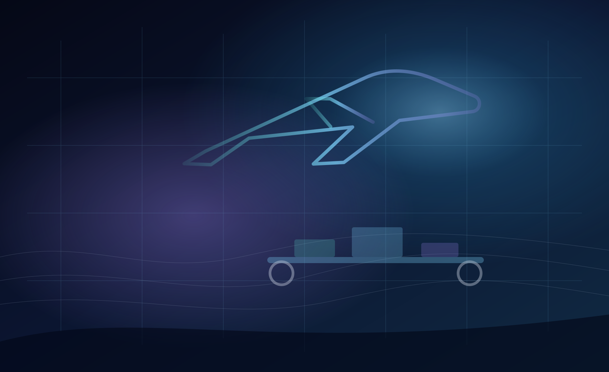
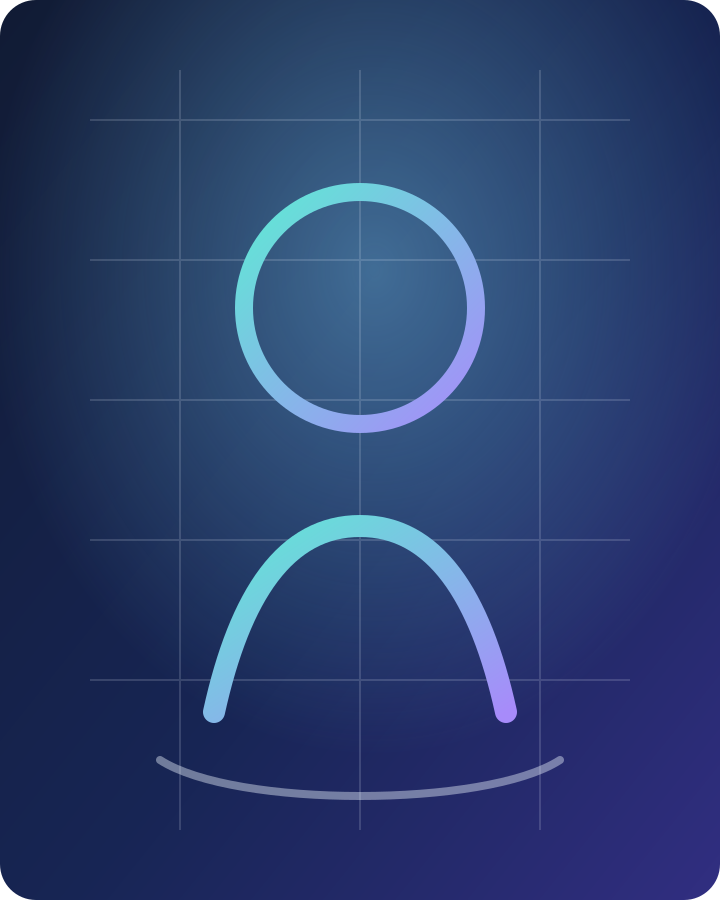

Lean Process Improvement
Map current-state workflows, find bottlenecks, remove non-value-added steps, and build standard work that operators can actually use.

Industrial Engineer | Aero and Automotive Enthusiast
I turn manufacturing problems into measurable improvements: faster flow, safer work, cleaner quality systems, and data-backed decisions from the shop floor to the design table.
I am a curious engineer who believes continuous improvement is not just a methodology, but a mindset I strive to practice in my work, my learning, and my daily life.

What I Can Get Done
Map current-state workflows, find bottlenecks, remove non-value-added steps, and build standard work that operators can actually use.
Apply APQP, PFMEA, SPC, validation protocols, control plans, and root-cause tools to reduce defects and stabilize production.
Connect process needs with manufacturing system integration, tooling, fixtures, and better workcell layouts.
Use Python, Excel Solver, SQL, Power BI, Tableau, Minitab, and optimization models to convert operating data into action.
Project Hangar
These examples combine manufacturing engineering, human factors, quality, and decision science across aerospace, automotive, fabrication, and assembly environments.
Implemented a redesigned 48-step workflow using PDCA and time studies, eliminated 9 non-value-added steps, reduced cycle time by 37% per part, and verified $60,729.82 in annual savings.
Evaluated a VR engine assembly/disassembly training system using task performance, NASA-TLX, cognitive load, cybersickness, presence, and user research.
Led a cross-functional Kaizen effort to reduce injury risk and improve process efficiency by 7.83%.
Built a Python MILP model for 52 stations, reducing idle time by 12%, improving throughput by 15%, and modeling $0.7M in annual cost reduction.
Used VSM, CAD, PFMEA, and fixture redesign to increase production rate by 21.6% per hour and improve line efficiency by 15.66%.
Reduced handling time by 18.93%, improved worker safety by 35.38%, and saved 140 minutes per worker daily through Kanban flow.
Led structure and stability work, mentored six members, and built Python optimization tools that reduced testing time by 30%.
DJS Skylark | SAE Aero Design
I led the Structure and Stability team, mentored six members, and helped drive aircraft structural design, assembly, troubleshooting, and competition performance.
Design report recognition
Mission performance recognition
Testing time reduction with Python optimization
Blog
Three personal essays about how I think, what I value in engineering work, and why aerospace and automotive systems keep shaping my curiosity.
How aircraft thinking influences the way I approach manufacturing systems and process improvement.
02A personal view on time studies, standard work, Kaizen, and the compounding effect of practical changes.
03Why I like using analytics, optimization, and visualization to make engineering decisions clearer.
Experience Path
Workflow redesign, APQP, SPC, standard work, validation, automation, and labor-hour savings.
Graduate coursework evaluation in Lean, Kaizen, Six Sigma, Minitab, quality control, and process optimization.
Kaizen leadership for tire handling operations, ergonomic analysis, control plans, and sustained KPIs.
Fixture design, VSM, PFMEA, DFM validation, and assembly-line implementation for electromechanical components.
Ergonomic trolley design, Kanban flow, NASA-TLX, schedule optimization, and OEE improvement.
Toolbox
I graduated with an M.S. in Industrial Engineering from the University of Wisconsin-Madison, with a B.Tech in Mechanical Engineering and a minor in Data Science from the University of Mumbai.
Lean Six Sigma, Kaizen, 5S, VSM, PDCA, APQP, PFMEA, SPC, RCA, 8D, 5 Whys, control plans, ergonomics
SolidWorks, AutoCAD, Fusion 360, CATIA, ANSYS, DFM, fixture design, electromechanical assemblies
Python, SQL, R, R Shiny, MATLAB, C, C++, Minitab, Excel Solver, Tableau, Power BI
SAP, Trello, MS Office, manufacturing system integration, documentation, validation protocols
Lean Six Sigma Green Belt, ISO 9001:2015 Auditor, ISO 14001:2015 Auditor, SAP
Ready for Takeoff
I’m based in Madison, WI, and drawn to work that combines industrial engineering, systems thinking, and measurable improvements in how people, processes, and technology perform together.